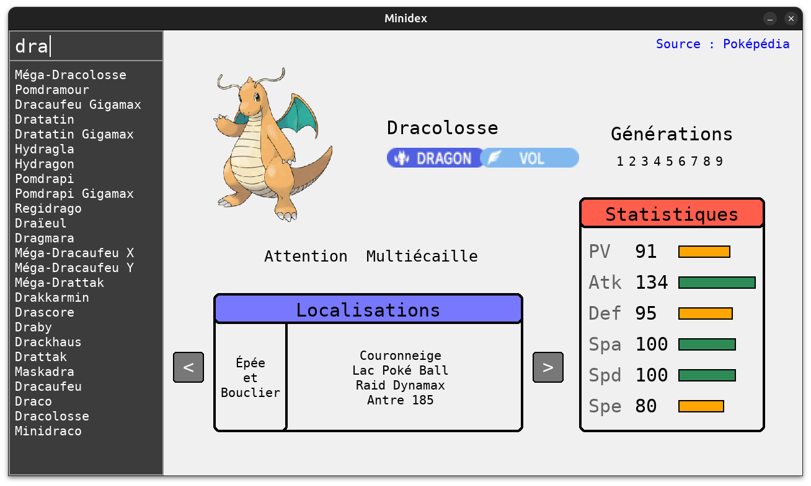
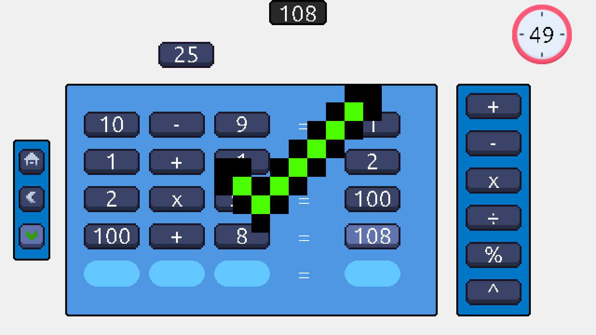
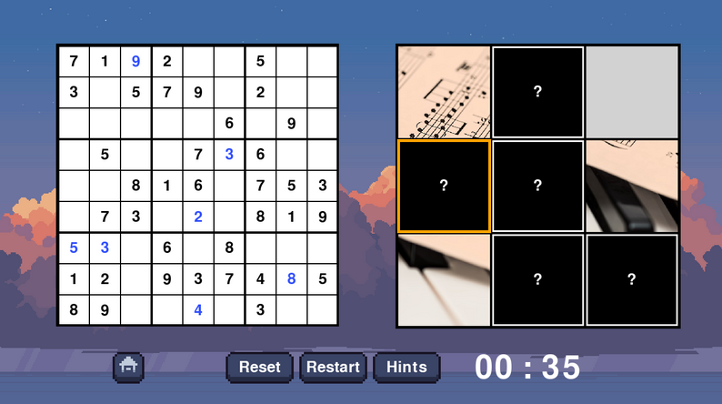
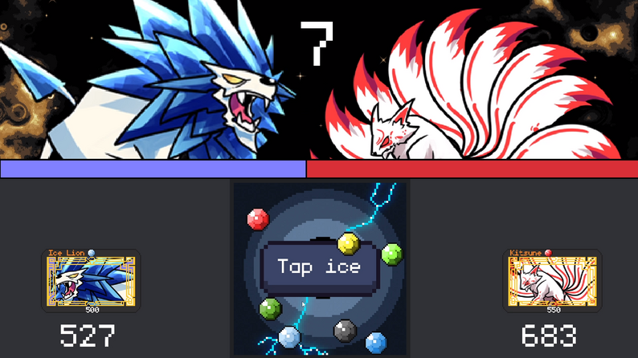
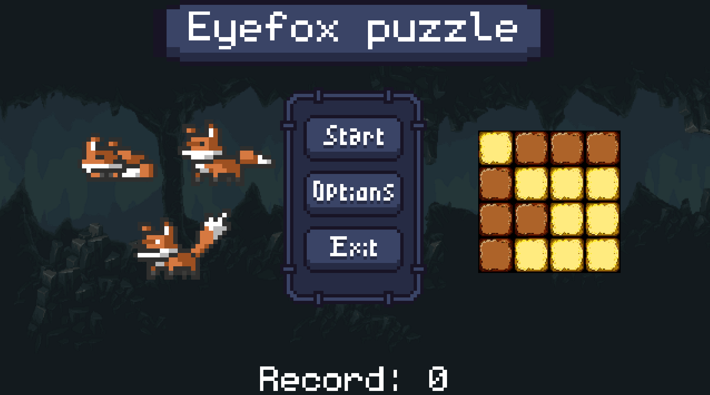

Minidex
Minidex is a lightweight Pokemon encyclopedia that provides detailed information about each Pokemon, including its type, stats, abilities, location, and more, for every generation. The data is collected exclusively in French by performing web scraping on Pokepedia, the French-language Pokemon wiki. Minidex is designed to offer a compact and generation-specific view of the entire Pokedex, tailored for French-speaking users and developers.

It Adds Up
It Adds Up is a number puzzle game inspired by the French TV game Le Compte est Bon. The objective is to reach a target number by combining a given set of numbers using arithmetic operations. Unlike the original game, It Adds Up includes support for the modulo and exponentiation operators, and allows the use of negative numbers. This adds an extra layer of complexity and flexibility to the game, encouraging more creative and strategic solutions.

Taquin's Sudoku
Taquin's Sudoku is a hybrid puzzle game that combines Sudoku and the classic 15 puzzle, also known as Taquin. You can choose to play either game individually, or experience both in the classic mode. In this mode, solving a Sudoku puzzle unlocks a hidden piece of the Taquin. You can also choose to increase or decrease difficulty which will result in larger or smaller taquin's grid and harder or easier Sudoku to solve.

Battle Brawlers Card Game
Battle Brawlers Card Game is a turn-based game. Each match is played with three AI-controlled opponents. Players can build their own deck and select three unique Brawlers. The goal is to capture cards with your Brawlers by fighting other Brawlers in mini-games. The winner of the mini-game scores one point and the first player to reach three points wins the match. It was inspired by a game on the Nintendo DS.

Eyefox Puzzle
First version of Eyefox Puzzle, originally designed for computer. Each level begins with two grids, one on the left and one on the right. The left grid shows the target configuration, while the right grid starts in a different state, with some tiles hidden and others revealed. Your goal is to make the two grids identical by swapping the color of a tile, which will also flip the colors of all its neighboring tiles.
